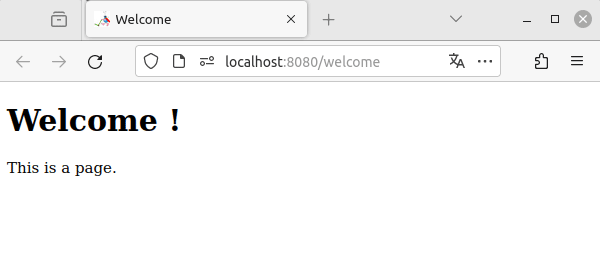
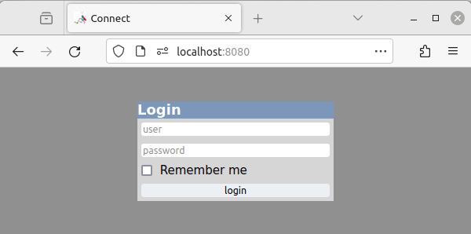
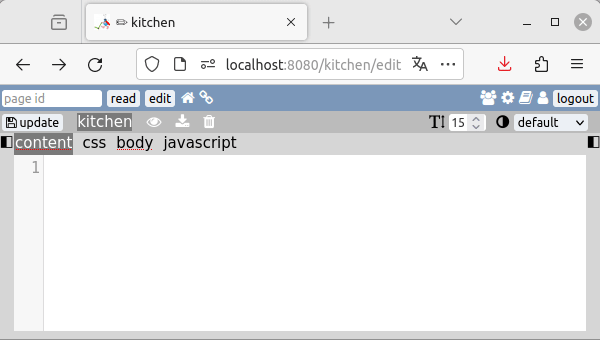

✨ Introduction
Page identifier
The page is the main unit of W. Each page is associated with an identifier, which is also the address of your page. It can only be made up of lowercase characters, hyphens or underscores. To access a page, type its identifier after the domain name or subfolder in which W is installed.
https://example.net/my-page
Structure
There is no hierarchy between pages: in W, all pages are equal. It's impossible to create subdirectories. The structure is only driven by links that exist or not between pages.
In this example, it's impossible for visitor that are on page 1 to explore any other pages. Being on the page 3 give visitors access to many pages, but not to pages 6 and 7 which are only interconnected between themselves.
Hompage
By default, there is no home page in W. This is usefull if you want your website to store many different things. But if you are building a more conventionnal website, you can choose to redirect root directory to one of your pages.
📄 Create a page #
Page creation is designed to be as fast as possible.
Simply type in the address bar of your Web browser a title for the page, followed by /add.
The title is automatically transformed into an identifier.
If it contains non-compatible characters, spaces or capital letters, these will be removed or converted.
This takes you straight to the editing interface.
From here, you can write the content of your page using Markdown. To save your page, click on or use the CTRL + S keys. You can then display the result by clicking on the eye button, or using the CTRL + D keys. The page will be displayed in a new tab.
When we make new modifications from the editing interface and click on "display", if our page's tab is still open, it will be re-used. So there's no need to close it each time.
You may have noticed that the address of the editing interface corresponds to our page identifier followed
by /edit.
You can edit any of your pages this way.
If you're not logged in, you'll be asked for your login details.
Editing tabs are highlighted by a pencil symbol before the page title.
If changes have been made but not saved, an asterisk appears in front of the page ID in the interface and in
front of the tab title.
And if you try to close the tab, a prevention message will appear.
🔗 Create a link #
To create links to other Web sites, you can of course use Markdown syntax, or even HTML directly, if you
want more customization.
External links are those pointing to another site and beginning with https://.
Internal links are those that lead to other pages on your W.
To make internal links, you can still use Markdown or HTML. The page identifier is used as the target of the
link.
But there's a third approach: you can also create links by surrounding the page identifier with two square brackets on either side. This will later use the page title as the visible part of the link (if it exists!).

When you arrive at an identifier that does not correspond to any page, you receive an alert message: “this
page does not exist yet”.
This message is customizable in the administration interface.
When you are connected as an editor, a button is also displayed.
Clicking on it is another possible way to create a page equivalent to typing /add after the
identifier in the address bar.
🏠 Home interface #
By going directly to the installation address of W, we arrive at the “Home” interface. From this location you can view all the pages that W contains. They are displayed in list form, which allows you to view the associated metadata.. You can also edit or view the pages by clicking on the pencil and eye icons.
This interface has powerful filtering tools which will later allow you to generate menus to integrate on your pages.
🖼️ Adding images #
W has a media manager. This allows you to import images, sound, videos, fonts or other files, then organize them. When you want to insert media, it is possible to copy a code to paste into your page. This code is simply markdown or HTML, depending on the media type.
In the case of large quantities of files, you can then use another type of code, specific to W, which allows the entire content of a folder to be displayed. This code can be enhanced with sorting and filtering options for finer adjustments.
🏗️ Advanced building #
The page editor allow you to use four different tabs.
the CSS and Javascript tabs are pretty self-explanatory.
They will generate files that will be linked to the page.
The BODY is used to arrange the rendering of the final HTML page.
Layout
The only way to display what's written in the CONTENT tab of a page is to insert it in the BODY of a page.
To to this, we use the following syntax: %CONTENT%.
We can even call up other page's content by specifying an id:
%CONTENT?id=page_id%.
Unlike the CONTENT tab, markdown is not interpreted in the BODY. It's an ideal place to put complex HTML that you won't be editing very often.
Templating
There is no such thing as a template in W, as every page can be a template. There are 3 types of templates:
- CSS template
- BODY template
- Javascript template
Menus
If you need to have a menu (a list of page links displayed on many pages), W can help you with the LIST tool.
%LIST%
The code above will print an HTML list of all the pages in the database. This is very basic. This tool can use the sames filtering and sorting as in the Home interface.
%LIST?tagfilter[]=article%
The code above will list all pages that have the tag article
Metadata inclusion
It's also possible to inject metadatas. Here are some examples:
%TITLE%title of the page%DESCRITION%description of the page%VISITCOUNT%number of page visits%DATEMODIF%date of last edition%SUMMARY%table of content based on headings
- ➡️ continue reading: archives
- ⬆️ back to top